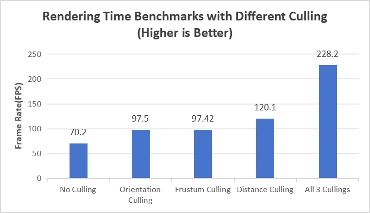
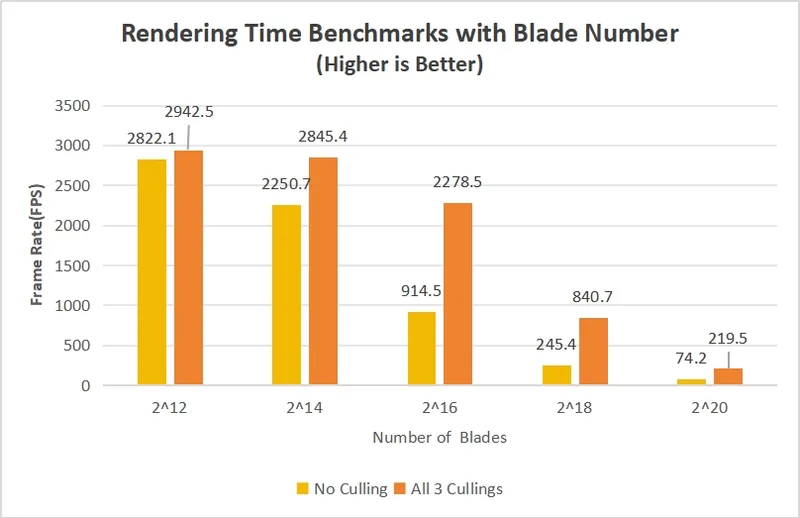

Vulkan Grass Rendering
A grass simulator and renderer written against the Vulkan API. Each blade is a Bézier curve. A compute shader applies gravity, wind and recovery forces to every blade and culls the ones that do not contribute to the frame; tessellation shaders turn the remaining curves into geometry, with more detail close to the camera.
It follows the paper Responsive Real-Time Grass Rendering for General 3D Scenes by Jahrmann and Wimmer.
With 32,768 blades, orientation, view-frustum and distance culling together raise the frame rate from 70.2 to 228.2 FPS.
-
8,192 grass blades with dynamic tessellation levels
Level of detail
-
Tessellation level follows the distance to the camera
Culling
-
Orientation culling -
View-frustum culling -
Distance culling
Performance
-

Frame rate with each culling method, 32,768 blades -

Frame rate by number of blades, with and without culling